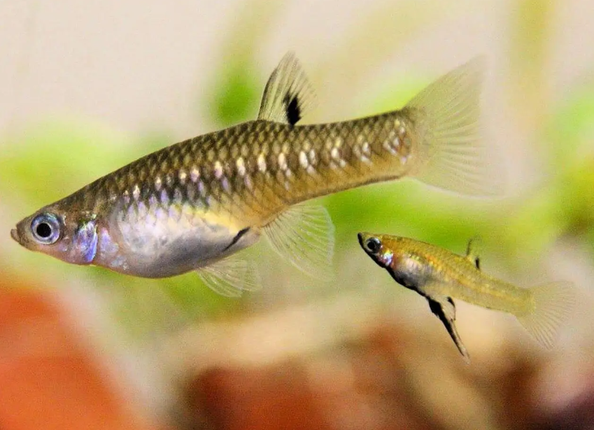
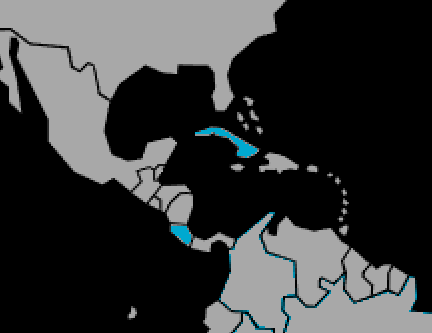

Systématique
- Ordre : Cyprinodontiformes
- Famille : Poeciliidae
- Genre : Girardinus
- Espèce : G. metallicus
- Auteur : Poey, 1854

Girardinus metallicus, le girardinus métallique, est un petit poéciliidé vivipare endémique de Cuba et présent à Costa Rica. Son épithète spécifique « metallicus » fait référence aux écailles bleu-métallique de la tête et du dos lorsque l'animal est vivant; cette teinte disparaît lors de la conservation en alcool.
Le mâle atteint 3 à 4 cm, tandis que la femelle peut mesurer jusqu'à 8 cm. Le corps affiche une coloration de base beige clair, argentée, dorée ou avec des reflets gris, verts ou bleus selon la lumière. Les barres verticales transversales sont nettement marquées, présentant un fort reflet métallique particulièrement visible sous les rayons du soleil, donnant l'impression que le poisson brille.
L'espèce montre un polymorphisme de coloration avec trois morphes reconnus : un morph incolore (transparent), un morph jaune au ventre, et un morph noir au ventre (non présent à l'état sauvage, résultat de l'élevage en captivité). Le ventre est clair, presque blanc. L'œil est grand et cerclé de jaune doré. La bouche est dépourvue de barbillons et orientée vers le haut.
Girardinus metallicus est une espèce grégaire pacifique occupant naturellement les zones de surface et semi-pélagiques. Elle vit en bancs, sans hiérarchie marquée ni domination apparente. L'espèce se disperse dans tout l'aquarium avec des mouvements incessants, très actifs.
Les mâles sont très entreprenants et poursuivent en permanence les femelles pour l'accouplement, d'où l'importance de maintenir plusieurs femelles pour un mâle afin de dissiper le harcèlement. Malgré cette agressivité reproductrice, l'espèce ne montre pas d'agression notable entre congénères. Elle apprécie les zones ombragées en l'absence d'éclairage intense. Un aquarium planté offre refuge et réconfort.
Mode : ovovivipare; la nageoire anale du mâle est transformée en organe génital (gonopodium). Cet organe n'apparaît que vers la sixième semaine de vie. Les 3ème, 4ème et 5ème rayons de la nageoire anale sont modifiés en une gouttière permettant l'introduction directe du sperme dans l'orifice génital des femelles lors du pseudo-accouplement.
Les spermatozoïdes sont longuement stockés par la femelle dans les replis de l'oviducte. Elle peut donc produire 4 à 6 portées successives séparées par quelques semaines, sans rencontrer de nouveau mâle. À 26–28 °C, les naissances peuvent se succéder tous les 24 à 28 jours.
Les femelles mûres donnent naissance à 20 à 80 alevins (moyenne 40–60), parfois jusqu'à 100. Les jeunes naissent grands (environ 1 cm) et autonomes. La croissance est rapide. Les alevins peuvent être différenciés sexuellement dès 7–8 semaines et sont sexuellement actifs à partir de 5 mois, d'où l'importance de séparer rapidement les jeunes mâles des femelles pour éviter une reproduction trop précoce.
Dimorphisme sexuel : très marqué et aisément reconnaissable; le mâle est beaucoup plus petit et moins rond que la femelle. Il possède un gonopodium noir bien visible, dotés de 2 petits crochets. Le mâle présente une longue tache noire qui débute sous le museau et s'étend jusqu'au gonopodium, avec parfois des taches noires supplémentaires sur l'arrière de la tête et la nageoire dorsale. La femelle est plus trapue avec un ventre plus arrondi en période de reproduction.
Espérance de vie : environ 5 ans en captivité, ce qui en fait une espèce robuste et longévive relativement aux autres petits poéciliidés.
Girardinus metallicus fréquente les marais lowland, lagunes, savanes inondées, ruisseaux et fossés à eau claire et stagnante ou très lentement courante. L'habitat naturel affiche une forte présence de végétation aquatique et palustre, avec des accumulations de matières organiques en décomposition et des branches. L'espèce préfère les zones ensoleillées où les algues se développent, ce qui reflète son régime d'eau saumâtre toléré mais non obligatoire.
Répartition

Origine naturelle :
- Cuba, île principale et Isla de la Juventud.
- Costa Rica, Amérique centrale (selon certaines sources, bien que Cuba soit l'endémisme principal).
- Eaux douces et saumâtres du pourtour de l'île cubaine, principalement les zones côtières et les systèmes fluviaux.
- Localités importantes : lagunes côtières, marécages de Ciénaga de Zapata, zones inondées des savanes.
L'espèce a été importée en Allemagne en 1906 et s'est établie rapidement en aquariophilie. Elle n'est plus collectée à l'état sauvage, exclusivement reproduite en captivité depuis plusieurs générations.
Paramètres de maintenance
Température : 22 à 26 °C, idéalement 26 °C; l'espèce tolère bien les variations.
pH : 6,5 à 7,5, de légèrement acide à neutre; elle supporte une gamme étroite mais bien définie.
GH : 9 à 19 °dGH, eau moyennement dure; l'espèce n'aime pas les eaux trop douces.
Courant : nul à très faible; préférer les eaux stagnantes.
Volume conseillé : un groupe de 8 individus minimum occupe 40–50 L avec une bonne longueur de façade. Ajouter 10–20 L par individu supplémentaire. Une abondante végétation est fortement recommandée.
Régime alimentaire
Régime : omnivore; l'espèce se nourrit principalement de diatomées, algues, détritus, larves d'insectes et végétation aquatique dans la nature.
En aquarium, accepte toutes sortes de nourritures : flocons, granulés, paillettes, avec une prédilection pour les petits insectes vivants, larves de moustiques, petits crustacés d'eau. Aliments congelés facilement acceptés (daphnies, artémias, vers de vase). L'espèce grignote volontiers les algues présentes dans l'aquarium.
Une alimentation variée et régulière distribuée en petites quantités une à deux fois par jour maintient la vivacité et favorise les reproductions. L'introduction de fournitures naturelles (feuilles de chêne, tourbe) améliore la condition générale.